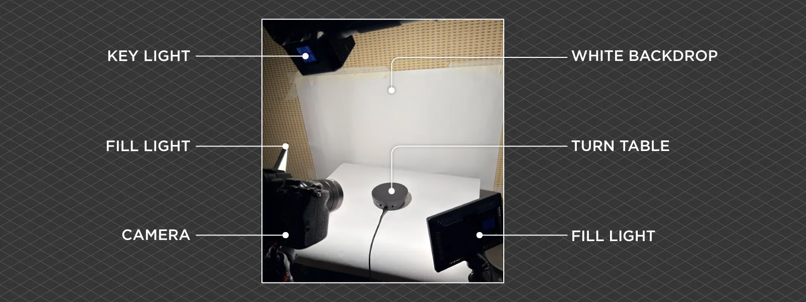
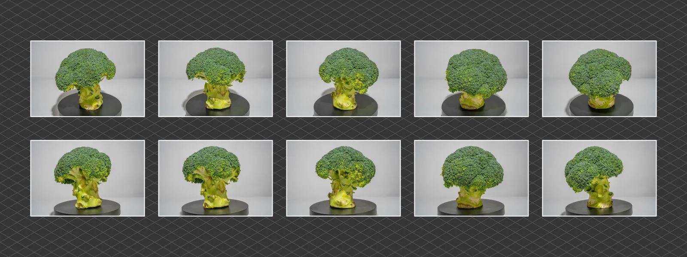
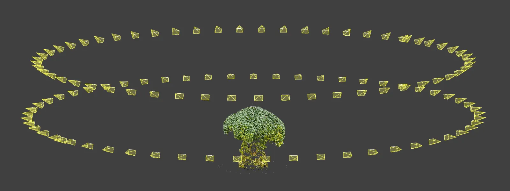
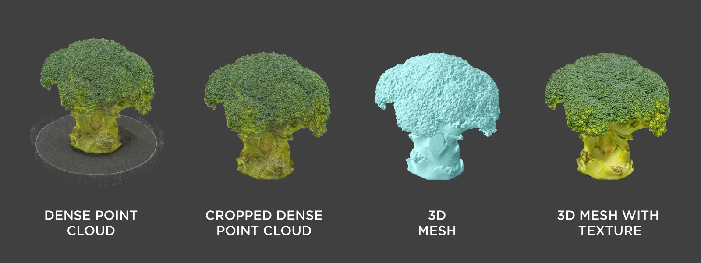
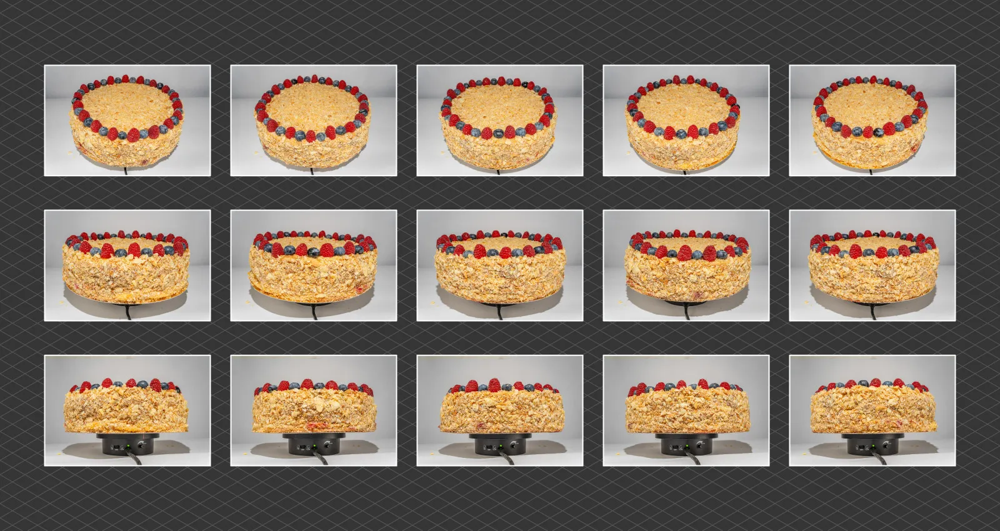
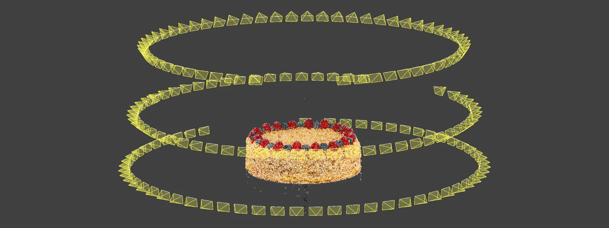
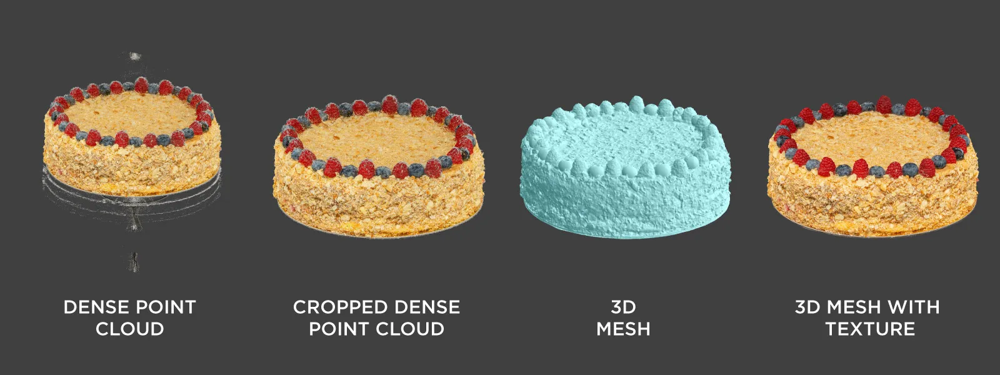
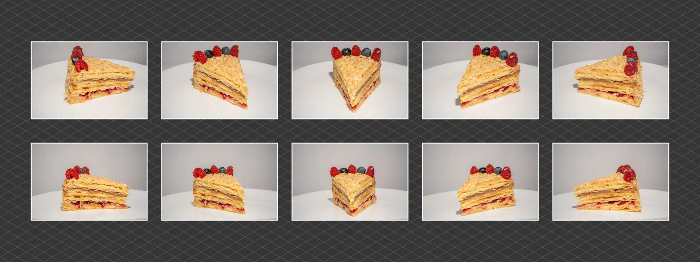
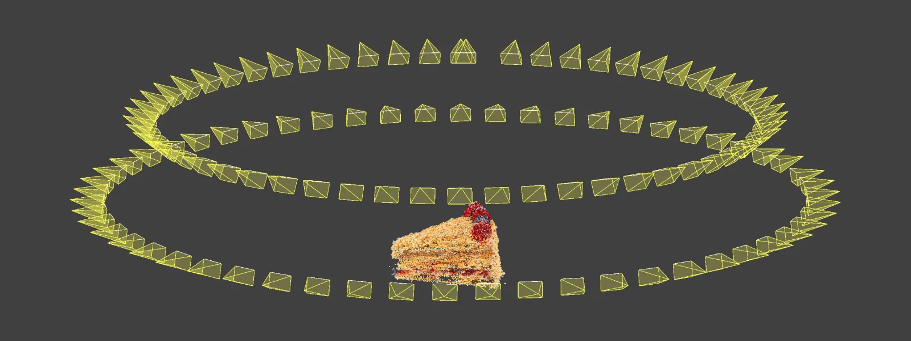
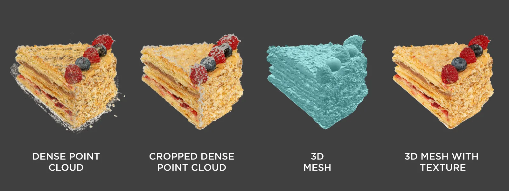

Fotogrametri uygulaması
Gıda Fotogrametrisi: Kek 3B’dir
Yiyecekleri fotoğraflardan 3B modele dönüştürmek için döner tabla kurulumu, ışık ve kamera ayarları ile veri işleme iş akışının pratik bir özeti.

Gıda ürünlerini taramak hem eğlenceli hem de zaman zaman kullanışlı olabilir. En belirgin kullanım alanı; görsel efekt, sanal gerçeklik ve oyun sektörleri için 3B varlıklar oluşturmaktır. Ev yapımı bir keki arkadaşlara ve aileye 3B olarak göstermek ise daha özel bir kullanım alanıdır. Bir kameranız ve biraz merakınız varsa, ihtiyacınız olan tek şey doğru yönlendirmedir.
Bu çalışmada yiyecekler, nesnenin etrafında dairesel hareketlerle fotoğraflanarak taranıyor ve süreç adım adım açıklanıyor.
Fotogrametri teknikleri
İlk yöntem, kameranın nesnenin etrafında dolaştığı klasik yörüngesel taramadır. Kamera birkaç derecede bir fotoğraf çeker ve fotogrametri için gerekli görüntü örtüşmesi sağlanır. Bu, hem hava fotoğrafçılığında hem de karasal 3B taramalarda yaygın bir tekniktir.
İkinci yöntem döner tabla tekniğidir. Kamera sabit kalır, nesne döner tabla üzerinde döndürülür. Ancak arka plan ve ışık daha dikkatli hazırlanmalıdır. Fotoğrafların tamamında sabit kalan ayrıntılar, görüntülerin hizalanmasını bozabilir.
Üçüncü yöntem çapraz polarizasyon fotogrametrisidir. Polarizasyon filtreleri yansımaları azaltır. Özellikle parlak ve yansıtıcı nesnelerde etkilidir; fakat ek ekipman gerektirir.
Kurulum: Elektrikli döner tabla, kamera, lens, tripod, video ışıkları ve kamerayı iki saniyede bir tetikleyen kablolu intervalometre kullanıldı. Beyaz kâğıtlar, ışığı yansıtarak daha yumuşak gölgeler ve daha düşük kontrast sağladı.
Brokoli ile ilk deneme
Kek gibi zamanla bozulabilecek bir nesneye geçmeden önce kurulum brokoli üzerinde test edildi. Brokoli, parlak olmadığı ve çok sayıda ayrıntıya sahip olduğu için fotogrametriye uygundur.
Kurulumda güçlü bir üst ışık, yanlarda düşük seviyeli dolgu ışıkları ve elektrikli döner tabla kullanıldı. Farklı dönüş hızlarında test çekimleri yapılarak hareket bulanıklığı kontrol edildi. Bulanıklık görüldüğünde dönüş hızı azaltıldı.
Tam bir dönüşte 56 fotoğraf hedeflendi ve iki saniyelik çekim aralığı kullanıldı. Bu ayar, döner tablanın tam turunu kapsayacak şekilde yeterli görüntü sağladı.



Ev yapımı kek taraması
Aynı yöntem ev yapımı Napolyon keki üzerinde uygulandı. Kek yansıtıcı olmadığı için çapraz polarizasyon veya farklı bir ışık düzeni gerekmedi.
Kek brokoliden daha büyük olduğu için daha geniş açılı bir lens kullanıldı. Nesnenin dış kenarında hareket daha hızlı olduğundan hareket bulanıklığı yeniden kontrol edildi.



Verinin işlenmesi
En sağlıklı yöntem, tüm işlemi tek seferde çalıştırmak yerine aşamaları ayrı ayrı uygulamaktır:
- Önce 3B yeniden yapılandırma yapılır ve kamera konumları kontrol edilir.
- Yoğun nokta bulutu oluşturulur.
- Gereksiz noktalar kırpma kutusuyla veya nokta bulutu düzenleme aracıyla temizlenir.
- Temizlenmiş nokta bulutundan dokulu 3B ağ modeli oluşturulur.



3B modelleri paylaşmak
Sketchfab, 3B modelleri web üzerinde paylaşmak için kullanılan popüler platformlardan biridir. Ücretsiz hesaplarda yükleme sınırı 100 MB’tır. Model dosyaları ZIP arşivi olarak yüklendiği için sıkıştırma önemlidir.
Örneğin, 2 milyon üçgenli ve 240 MB büyüklüğündeki bir OBJ dosyası ZIP formatında yaklaşık 60 MB’a düşebilir. PNG doku dosyaları fazla küçülmediği için JPEG’e dönüştürülebilir. Bu işlem doku dosyasını yaklaşık altı ila yedi kat küçültebilir. Bunun için OBJ dosyasıyla birlikte gelen MTL dosyasındaki “.png” uzantısını “.jpg” olarak değiştirmek gerekir.
Aşağıdaki modeller tarayıcı üzerinden döndürülüp yakınlaştırılabilir.
Sonuç
Yiyecek fotogrametrisinde sonucu belirleyen şey pahalı ekipman değil, tekrarlanabilir bir kurulumdur: sabit ve yumuşak ışık, kontrol altında tutulan pozlama ve netlik, hareket bulanıklığı oluşturmayan dönüş hızı ve tam tur boyunca yeterli görüntü örtüşmesi. Aynı düzen bir kez kurulduğunda farklı ürünler için tekrar tekrar kullanılabilir.
Veri işleme tarafında da aşamaları ayrı ayrı yürütmek, hatayı erken görmeyi sağlar; kamera konumları doğrulanmadan yoğun nokta bulutuna geçmek zaman kaybettirir. Parlak soslar, saydam bardaklar ve düz beyaz tabaklar gibi zor yüzeylerde ise ışık düzeni veya çapraz polarizasyon ayrıca değerlendirilmelidir.
Ortaya çıkan modeller yalnızca bir görsel değil; web, AR ve ürün sunumlarında doğrudan kullanılabilen, ölçüsü ve dokusu korunmuş 3B varlıklardır.